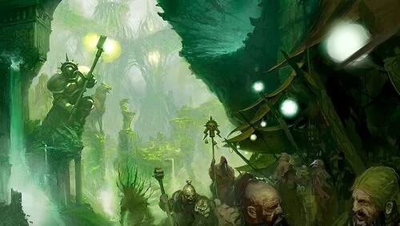

Előtörténet
01 · Az Élet BirodalmaBúcsúztassuk el a 2025–26-os szezont egy utolsó versennyel Ghyranban!
Ghyran, az Élet Birodalma, ahol az ősi erdők szellemei időtlen idők óta őrzik a végtelen virágzást, most halálos veszélybe került. Nurgle rothadása megfertőzte a birodalmat: a folyók iszappá sűrűsödnek, a lombok penészes fátylat öltenek, és a termékeny földből kórságos bimbók fakadnak.
A fertőzés kérlelhetetlenül halad Thyria mélye felé, ahol az ősi Szívfa dobog. Ha a rothadás eljut hozzá, szörnyűséges energiák szabadulhatnak fel, és Ghyran sorsa örökre megpecsételődik.
Minden hadúrnak döntenie kell. Vannak, akik megállítanák a rothadást, hogy az ősi erdők továbbra is virulhassanak – a hősöket az erdők szellemei fogják megjutalmazni. Mások épp az ellenkezőjét akarják: a túlburjánzott élet adományával fertőznék meg az ősi erdőt, és ők Nurgle Nagyapó bőkezű jutalmára számíthatnak.
Gyógyítás vagy fertőzés? Ghyranban a döntés a tiéd.
